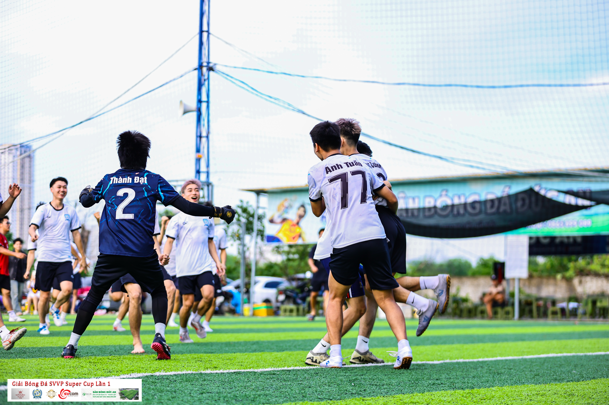

Tinh thần đồng đội
Luôn hỗ trợ lẫn nhau và cùng hướng đến mục tiêu chung của cả tập thể.
Thể thao là không ngừng bỏ cuộc
LOI NHOI FC là câu lạc bộ bóng đá phong trào dành cho những người có chung niềm đam mê với trái bóng tròn. Chúng tôi cùng nhau tập luyện, thi đấu và chia sẻ những khoảnh khắc đáng nhớ.
Với LOI NHOI FC, bóng đá không chỉ là thắng hay thua. Đó còn là tinh thần đồng đội, sự kỷ luật, lòng tôn trọng và tình bạn được xây dựng qua mỗi trận đấu.

Xây dựng một cộng đồng bóng đá tích cực, nơi mỗi thành viên đều có cơ hội phát triển kỹ năng, nâng cao sức khỏe và tận hưởng niềm vui khi chơi bóng cùng đồng đội.
Luôn hỗ trợ lẫn nhau và cùng hướng đến mục tiêu chung của cả tập thể.
Tôn trọng đồng đội, đối thủ, huấn luyện viên và trọng tài trong mọi trận đấu.
Thi đấu nhiệt huyết, không ngừng học hỏi và luôn giữ tình yêu với bóng đá.
Dù bạn là người đã có kinh nghiệm hay mới bắt đầu, LOI NHOI FC luôn sẵn sàng chào đón bạn. Hãy cùng chúng tôi tạo nên những trải nghiệm tuyệt vời!
Liên hệ với chúng tôi